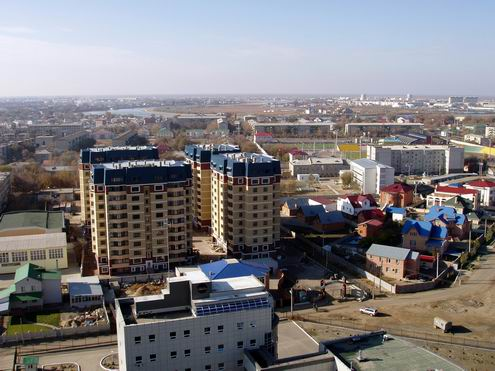

My profession-oriented web site
Made by Zhasmin Bagytzhanova
Topic:Atyrau city
History of Atyrau city
The wooden fort at the mouth of the Yaik River was founded in 1645 as
Nizhny Yaitzky gorodok (literally, Lower Yaik Fort) by the Russian
trader Gury Nazarov, a native of Yaroslavl, who specialized in trade
with Khiva and Bukhara. The fort was plundered by the Yaik Cossacks,
leading the Guriev family to rebuild it in stone (1647–62). Tsar Alexis
sent a garrison of Streltsy to protect the fort from Cossack incursions.
Despite these efforts, the Cossack rebel Stepan Razin held the town in
1667 and 1668. The fort gradually lost its strategic significance and
was demolished in 1810. Between 1708 and 1992 the city was known as
Guriev. The Kazakh name Atyrau means 'river delta'. Two parts of the
world have the city. The side of Samarskaya (right side of the river)
lies in Europe and the left bank of Bukharskaya is in Asia. It was
established in 1615, by the employer Mikhail Guriev, who applied the
decree to tzar Mikhail Fedorovich for a monopoly in the mouth of Ural to
fish sturgeons.[1]
Geography of Atyrau city
Atyrau (together with Aktau) is Kazakhstan's main harbour city on the
Caspian Sea, Atyrau at the delta of the Ural River. Atyrau city is
approximately 20 metres (66 feet) below sea level. The city is
considered to be located both in Asia and Europe, as it is divided by
the Ural River. The city is a hub for the oil-rich Caspian Depression;
because of this, many oil wells have been drilled in the Tengiz Field
and Kashagan Field areas. An oil pipeline runs from Atyrau to Samara,
where it joins the Russian pipeline system. A separate oil pipeline runs
from the Tengiz field to the Russian Black Sea port of Novorossiisk.
Climate of Atyrau city
Atyrau's climate is semi-arid (Köppen climate classification BSk), just
shy of being classified as arid (Köppen climate classification BWk),
with hot summers and cold winters. Precipitation is low throughout the
year. Snow is common, though light in winter. The lowest temperature on
record is −37.9 °C (−36.2 °F), recorded in 1909, and the highest
temperature is 42.7 °C (108.9 °F), recorded in 1984.[2] It is much more
continental than areas further west on the European continent, with
summers characterized by temperatures averaging 33 °C (91 °F) and lack
of precipitation, resembling continental hot-summer mediterranean
climates, and subarctic winters with little snow but with chilling
temperatures. These vast temperature swings are more comparable to
Siberia and the North American plains.